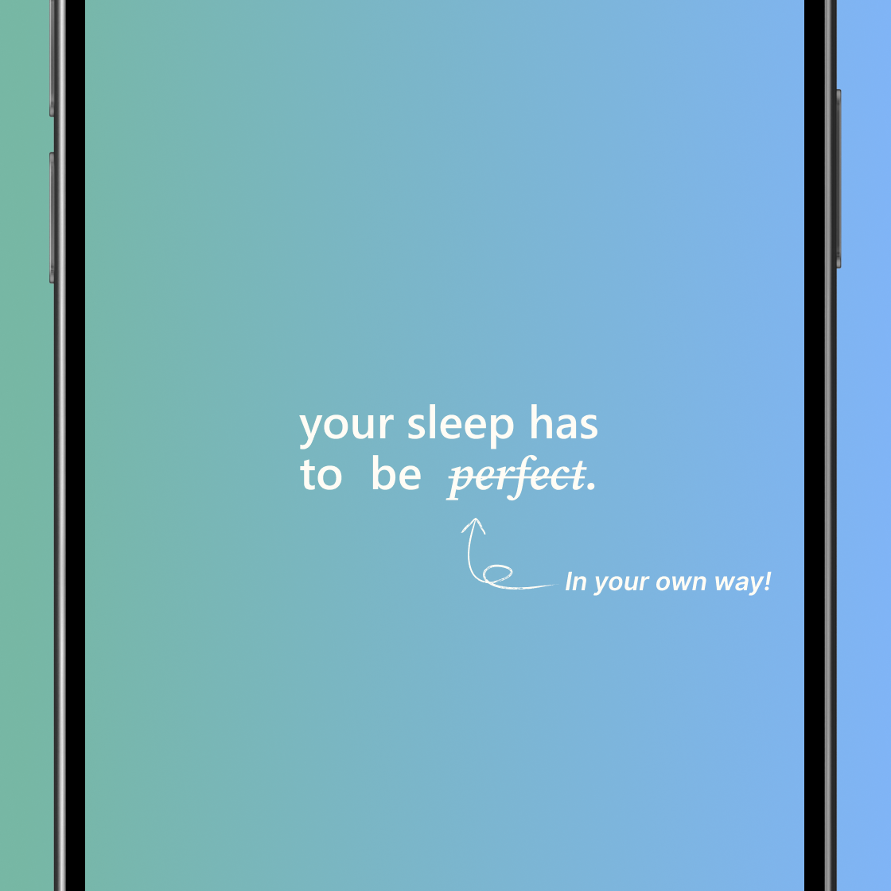
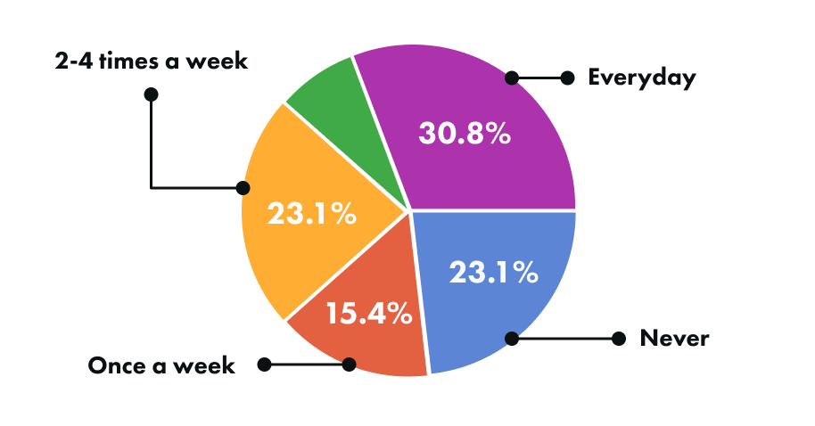
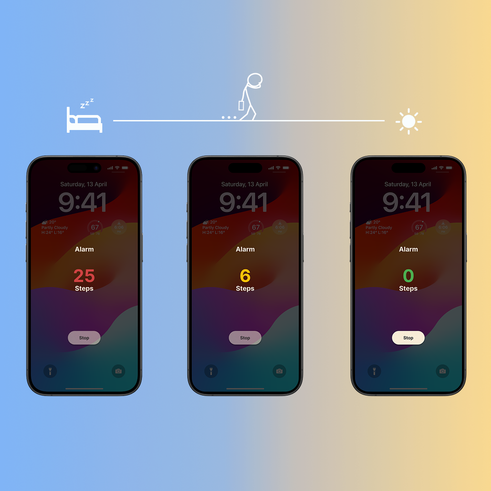
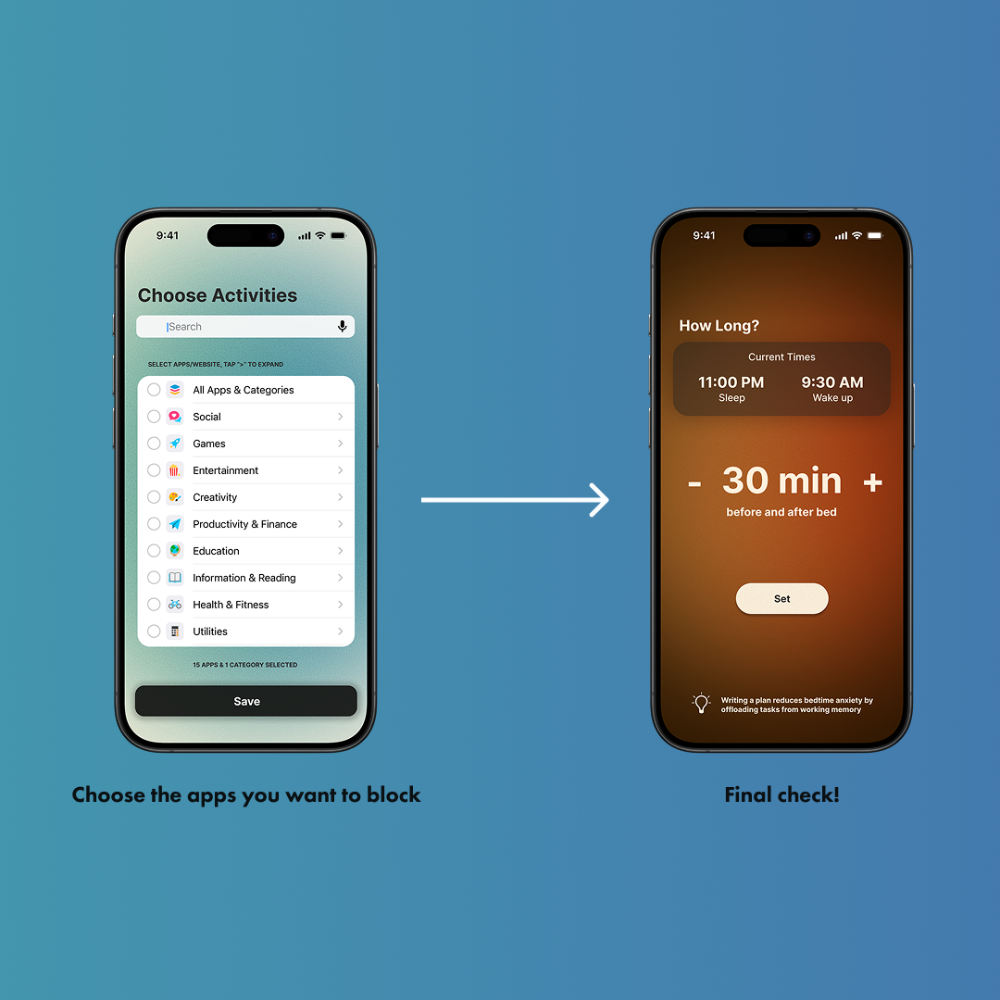
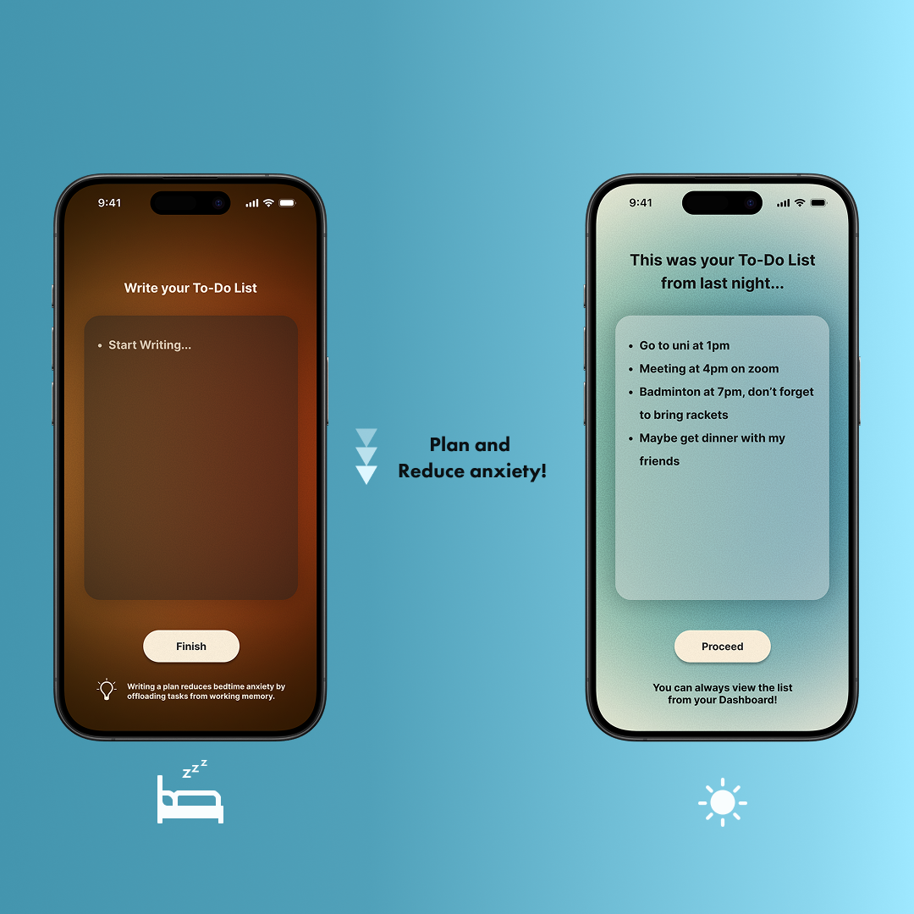

Reverie
REST, ROUTINES, RESULTS
Developed an innovative design solution to enhance well-being and help people lead more balanced lives during a UI/UX Hackathon.
01 ★ DISCOVERY
The Challenge & Discovery
Context
The team initially discussed the importance of breakfast for university students.
The "Why" Analysis
Through discussion, the team realized students don't eat breakfast because they "can't wake up".
Root Cause
The accumulation of fatigue from bad sleep is the core issue that prevents a healthy morning routine.
Key Insight
"On days with a good quality of sleep, people feel better in the morning. This naturally leads to breakfast to have a good start to the day."

02 ★ RESEARCH
Research & Data
University Students' Breakfast

58% mentioned sleep as a reason to why they won't eat breakfast.
Why Sleep Matters
Loss of
appetite
and
metabolism
Low
focus
and
Performance
Affects
mood
and
quality of life
7-9 hours of
uninterrupted
sleep is recommended
03 ★ SOLUTION
The Solution
"Your sleep has to be perfect. In your own way!"
Active Awakening
An alarm that only stops based on step count.
- Goal: To fully wake the body up, utilizing the phone's built-in step counter to force the user to walk.
- UI Detail: The screen transitions from red to yellow to green to visually track progress.


Routine Quality (Digital Detox)
Blocking apps 30 minutes before and after sleep.
- Goal: Maximize the quality of the bedtime and morning routines by removing distractions.
- Flexibility: Users can choose which apps to block and adjust the timer, giving them freedom until the very end.
Offloading Anxiety
A "Nighttime To-Do List" that carries over to the next day.
- Rationale: Writing a plan reduces bedtime anxiety by offloading tasks from working memory.
- Flow: Users write the list at night → Sleep → It becomes their active to-do list the next morning.

04 ★ REFLECTION
Reflection & Growth
Context
Submitted to "Productthon" (11th Sep) at North Theatre.
Outcome
The project did not win an award, but it was a valuable challenge that led to major personal growth.
Key Learnings
Prototyping Skills
Realized that high-fidelity prototypes (interactions and animations) are crucial for user experience, not just static flows.
Visual Design
Recognized that strong branding and visual polish significantly influence how judges perceive the solution.
Presentation Skills
Learned that a strong solution can be perceived poorly if not presented effectively; nervousness impacted the delivery.